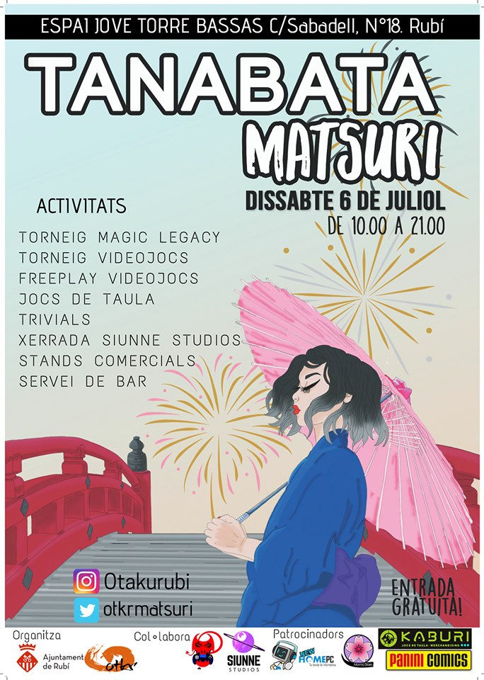

Per als amants dels festivals japonesos l'estiu significa una única cosa. El tanabata!
El tanabata es un festival japonés en el que la gent pot penjar els seus desitjos d'un arbre. Com es costum, nosaltres ho celebrem com mijor sabem: amb un festival a Torre Bassas!
El día 6 de Juliol podéu gaudir a Rubí de un munt d'activitats que us portem de forma totalment gratuïta. Torneig de Magic, torneigs de videojocs, concurs de preguntes d'anime i videojocs... i una xerrada molt especial de part de Siunne Studios, una empresa desenvolupadora de jocs made in Rubí!
Com a sempre comptarem amb servei de bar amb ramen i begudes, stands de venta d'ilustracions i un munt de gent amb qui fa gust passar un bon festival. És clar, parlem de vosaltres. No us ho perdeu!

#Rubí #Rubicity #Otkrmatsuri